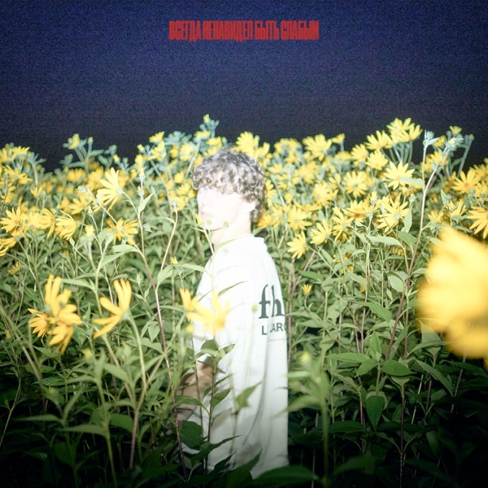
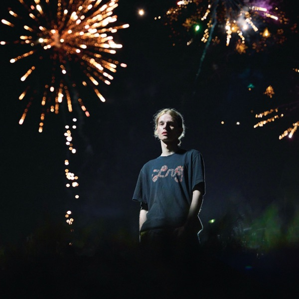
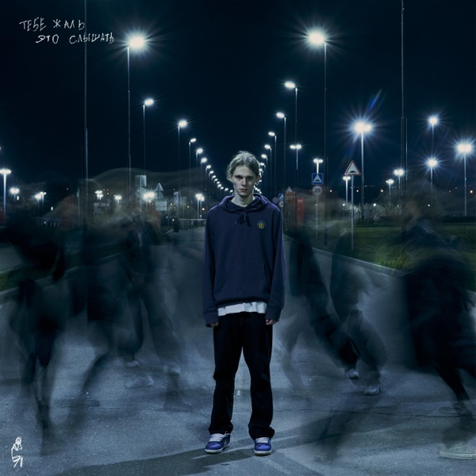
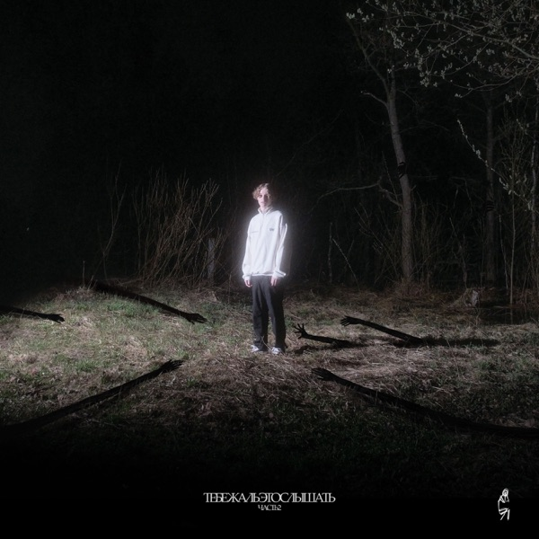
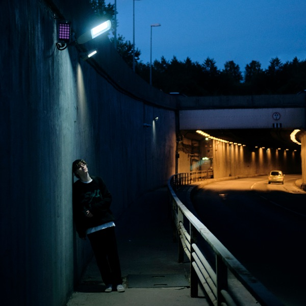
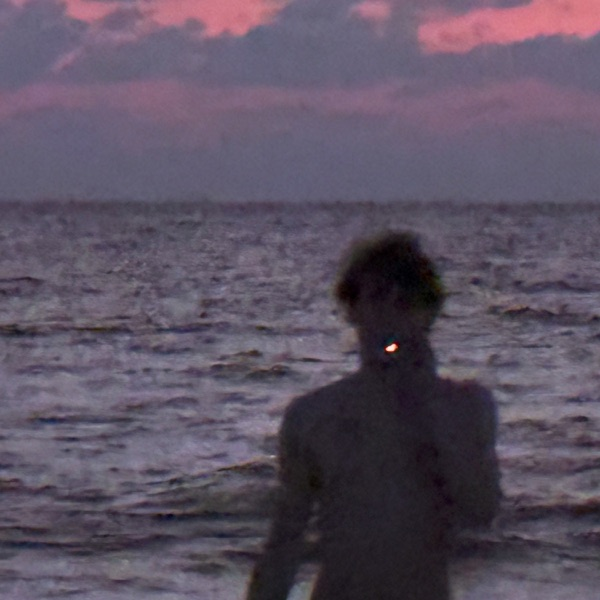

Альбом / 2024
всегда ненавидел быть слабым
10 композиций Cold Carti. Слушай релиз целиком и открывай любимые треки заново.
Слушать релизIndependent music / fan archive
«Всегда ненавидел быть слабым» — пространство о меланхолии, честности и визуальном языке артиста. Здесь собраны релизы, события и материалы сообщества.
Selected releases
Три релиза Cold Carti: выбери настроение и переходи к прослушиванию в Apple Music.

Альбом / 2024
10 композиций Cold Carti. Слушай релиз целиком и открывай любимые треки заново.
Слушать релиз
Альбом / 2023
8 композиций Cold Carti. Слушай релиз целиком и открывай любимые треки заново.
Слушать релиз
Мини-альбом / 2023
5 композиций Cold Carti. Слушай релиз целиком и открывай любимые треки заново.
Слушать релизCover archive
Девять релизов — девять историй. Наведи на обложку, чтобы узнать название, или нажми, чтобы слушать в Apple Music.


